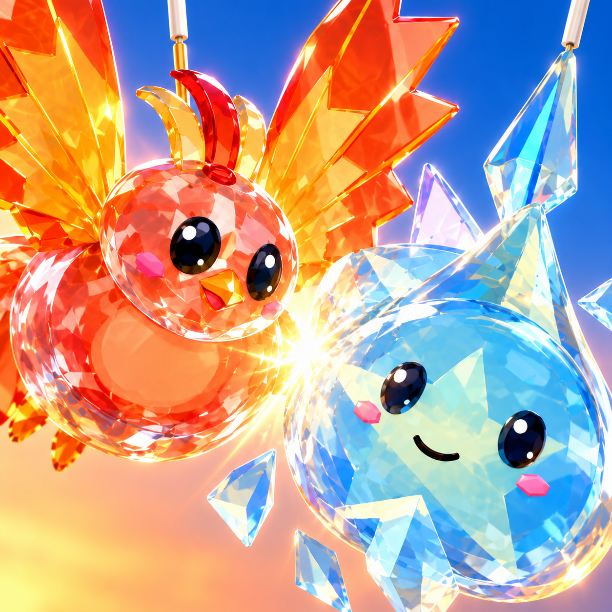

Glass Clash — icon display check
Phoenix–Comet clash

150 × 150
300 × 300
Dragon shatter
150 × 150
300 × 300
Browser display scaling only. Original PNG files are untouched. The corner rounding is a stress test for framing, not an assertion that every Roblox placement uses this exact radius.